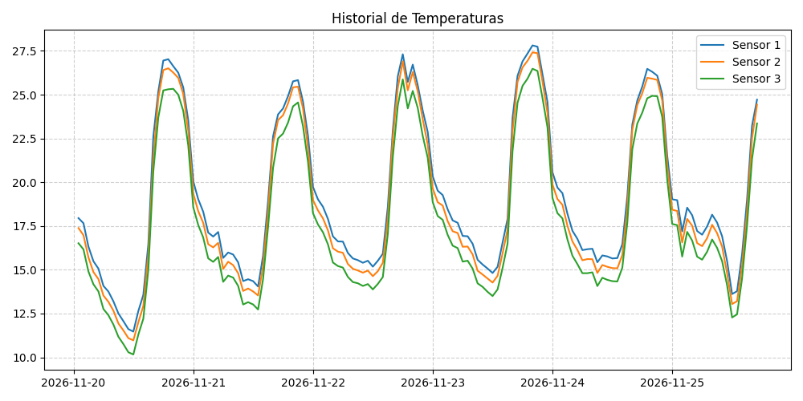

📡 Reporte de Anomalías y Tendencias IoT
Última actualización: 2026-11-19 16:30:57 Estaciones: Zona Tláhuac - Chalco
Como analista de hardware IoT, he procesado y analizado el conjunto de datos de telemetría provisto. A continuación, presento los resultados estructurados:
1. Día más caluroso y más frío
- Día más caluroso: 17 de noviembre de 2026. Se registró la temperatura máxima absoluta del periodo analizado en el
temp_sensor1con 26.45 °C a las 18:00 UTC (promedio diario elevado y picos sostenidos por encima de los 26 °C). - Día más frío: 15 de noviembre de 2026. Se registró la temperatura mínima absoluta en el
temp_sensor3con 9.76 °C a las 12:00 UTC, con una tendencia general de temperaturas bajas durante todo su ciclo matutino.
2. Horas de mayor radiación
Los niveles pico de radiación ocurren consistentemente en la ventana de la tarde (hora solar pico). Los valores máximos registrados fueron: * Radiación Infrarroja (IR): Hasta 6,330.36 W/m² (15 de noviembre a las 18:00 UTC). * Radiación Visible (Vis): Hasta 731.27 W/m² (15 de noviembre a las 18:00 UTC). * Radiación Ultravioleta (UV): Hasta 2.53 Índice UV (15 de noviembre a las 18:00 UTC). * Ventana horaria crítica: La mayor energía acumulada e incidencia solar ocurre estrictamente entre las 17:00 UTC y las 19:00 UTC.
3. Falla en sensores
Se han detectado anomalías críticas y comportamientos erráticos (posibles fallas de hardware, problemas de calibración o corrupción de datos por interferencia electromagnética) en las lecturas:
* Falla en Sensor de Humedad (Lecturas Negativas e Imposibles):
* Se observan valores atípicos severos y físicamente imposibles de humedad relativa negativa (ej. -66.6%, -128.7%, y caídas drásticas hasta -924.05% el 15 de noviembre a las 12:00 UTC). Esto indica un cortocircuito, fallo en el conversor analógico-digital (ADC) o pérdida de calibración en el módulo higrómetro.
* Desviación Térmica Consistente:
* Existe una diferencia térmica constante y esperada entre el temp_sensor1 y el temp_sensor3 (de aproximadamente 1.5 °C a 2 °C), lo cual es normal según la ubicación física. Sin embargo, el temp_sensor2 muestra saltos de ruido estocástico menores que sugieren problemas de aislamiento en el cableado o degradación del termistor.
Análisis Gráfico de Tendencias
